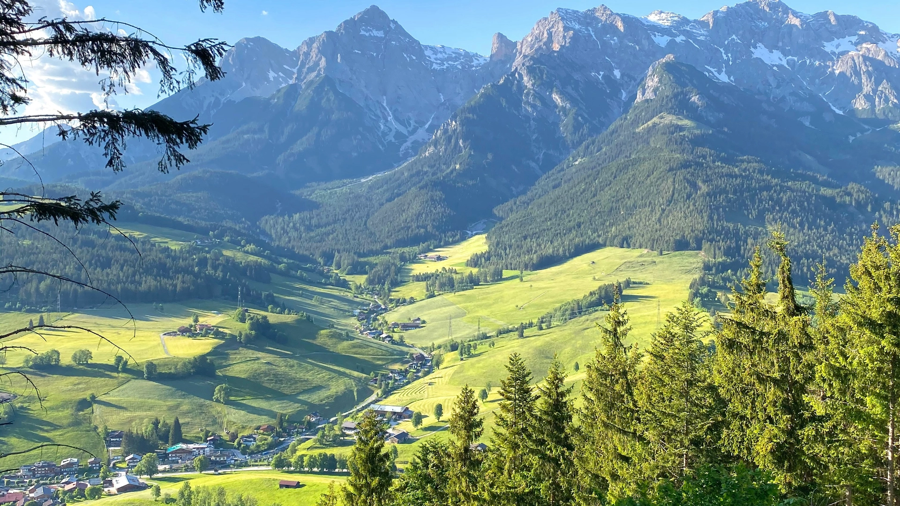
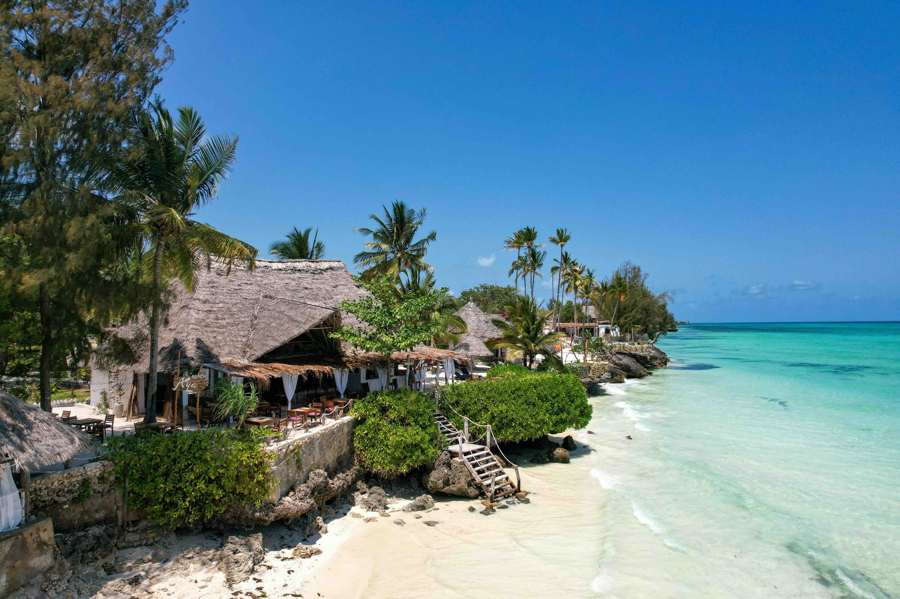
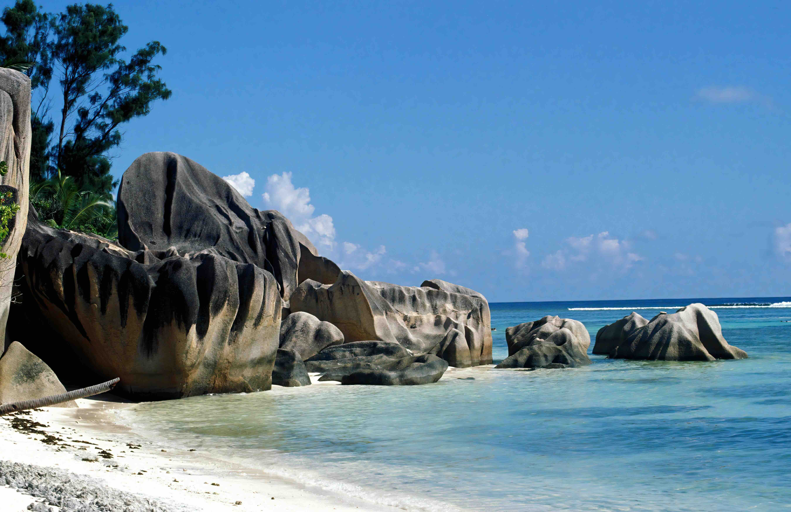
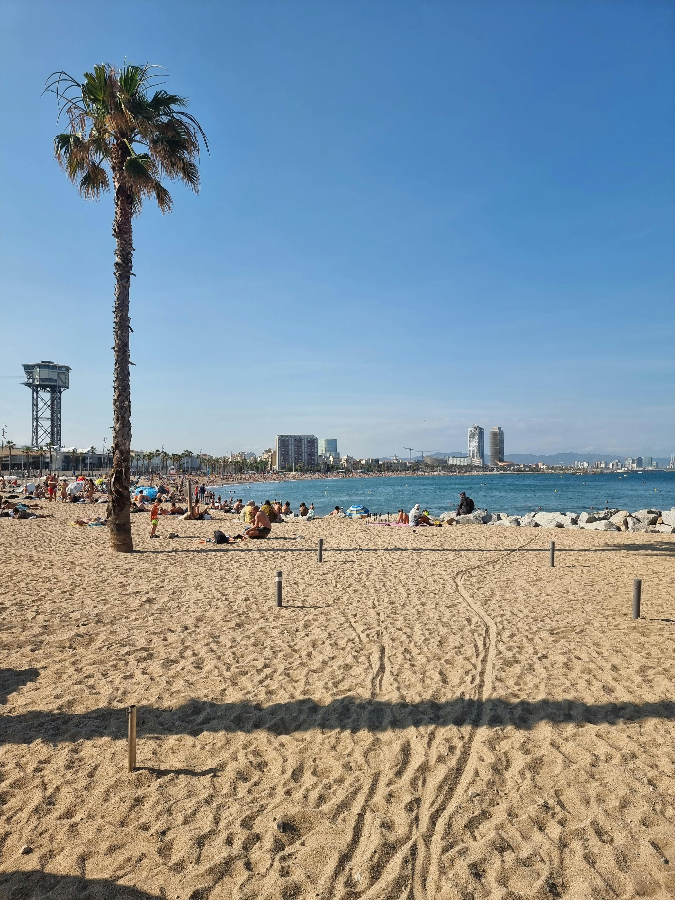

Summer
Where Summer Never Ends

Bali is a tropical island paradise known for its beautiful beaches, vibrant culture, and lush landscapes. In summer, the island offers warm weather perfect for beach activities and exploring its many temples and rice terraces. Visitors can enjoy water sports, traditional dance performances, and delicious Indonesian cuisine.
🎯 Things to do:
- Surfing
- Temple visits
- Hiking
- Beach relaxing
- Cultural shows
- Waterfalls

Ladakh
📍 Location: India
🌤️ Best Months: June – September
Ladakh is a high-altitude region known for dramatic mountains and clear skies. Summer is the best time to visit as roads open and weather improves. Visitors can explore monasteries, lakes, and unique landscapes while enjoying adventure travel in a remote environment.
🎯 Things to do:
- Trekking
- Visit monasteries
- Explore lakes
- Photography
- Guided tours
- Adventure activities

Jeju Island
📍 Location: South Korea
🌤️ Best Months: June – August
Jeju Island is a volcanic island with beaches, waterfalls, and lava tubes. Summer brings warm weather ideal for outdoor exploration. Visitors can hike Hallasan Mountain, relax on beaches, and enjoy unique natural attractions and local cuisine.
🎯 Things to do:
- Hiking
- Waterfall visits
- Beach visits
- Cave exploring
- Cycling
- Food tours

Phuket
📍 Location: Thailand
🌤️ Best Months: November – April
Phuket is a popular beach destination with vibrant nightlife and scenic beaches. Summer offers warm weather and lively atmosphere. Visitors can enjoy water sports and island tours.
🎯 Things to do:
- Snorkeling
- Beach relaxing
- Boat tours
- Nightlife
- Diving
- Markets

Cape Town
📍 Location: Western Cape, South Africa
🌤️ Best Months: December - February
Cape Town is a vibrant coastal city with stunning natural beauty. In summer, visitors enjoy sunny beaches, Table Mountain views, and lively culture. The city blends urban life with outdoor adventures, offering everything from hiking to waterfront dining and scenic drives along the coastline.
🎯 Things to do:
- Climb Table Mountain
- Visit beaches
- Explore V&A Waterfront
- Coastal drives
- Hiking
- Wine tasting

Zanzibar
📍 Location: Tanzania
🌤️ Best Months: June - October
Zanzibar is a tropical island paradise with white sand beaches and crystal-clear waters. Summer brings warm weather perfect for swimming and snorkeling. The island also offers rich history in Stone Town, spice tours, and a relaxed atmosphere ideal for both adventure and relaxation.
🎯 Things to do:
- Snorkeling
- Beach relaxing
- Visit Stone Town
- Spice tours
- Boat trips
- Diving

Kruger National Park
📍 Location: South Africa
🌤️ Best Months: May - September
Kruger National Park is one of Africa's largest game reserves, known for its diverse wildlife and scenic landscapes. In summer, the weather is warm and dry, making it an ideal time for game drives and wildlife viewing. The park offers various accommodation options and guided tours for an immersive safari experience.
🎯 Things to do:
- Safari drives
- Wildlife spotting
- Guided tours
- Photography
- Night Safaris
- Spot Big Five

Seychelles
📍 Location: Seychelles
🌤️ Best Months: April - May, October - November
Seychelles is a tropical archipelago known for its pristine beaches and crystal-clear waters. In summer, the weather is warm and humid, perfect for water activities and beach relaxation. The islands offer unique wildlife, including the endemic Seychelles giant tortoise, and a rich cultural heritage.
🎯 Things to do:
- Snorkeling
- Beach relaxing
- Island hopping
- Diving
- Nature walks
- Boat tours

Hawaii
📍 Location: United States
🌤️ Best Months: June – September
Hawaii is a tropical paradise known for its stunning beaches, vibrant culture, and outdoor adventures. In summer, the islands offer warm weather and many activities, making it an ideal time to explore the natural beauty and enjoy water sports.
🎯 Things to do:
- Beach activities
- Hiking
- Snorkeling
- Beach relaxing
- Boat trips
- Volcano Tours

Yellowstone National Park
📍 Location: United States
🌤️ Best Months: December – March
Yellowstone National Park is a vast wilderness area known for its geothermal features, diverse wildlife, and stunning landscapes. In winter, the park offers a unique experience with snow-covered terrain and opportunities to see bison, wolves, and other animals in their natural habitat.
🎯 Things to do:
- Hiking
- Geyser viewing
- Wildlife spotting
- Camping
- Photography
- Scenic drives

Los Angeles
📍 Location: California, USA
🌤️ Best Months: November – March
Los Angeles is a vibrant city in California known for its sunny weather, diverse culture, and entertainment industry. In winter, the city offers pleasant temperatures and fewer crowds, making it an ideal time to explore museums, beaches, and the famous Hollywood landmarks.
🎯 Things to do:
- Beach visits
- Beach visits
- Shopping
- Theme parks
- Hiking
- Sightseeing

Grand Canyon
📍 Location: Arizona, USA
🌤️ Best Months: December – March
The Grand Canyon is a massive canyon carved by the Colorado River in Arizona, USA. In winter, the park offers cooler temperatures and fewer crowds, making it an ideal time to explore the stunning landscapes and take in the breathtaking views.
🎯 Things to do:
- Hiking
- Photography
- Scenic views
- Tours
- Camping
- Exploration

Iguazu Falls
📍 Location: Brazil & Argentina
🌤️ Best Months: December – March
Iguazu Falls is a breathtaking waterfall system located on the border of Argentina and Brazil. In summer, the falls are at their most impressive with the highest water flow. Visitors can explore the surrounding national parks and enjoy the lush subtropical forests.
🎯 Things to do:
- Viewing platforms
- Boat Rides
- Photography
- Hiking
- Wildlife spotting
- Tours

Machu Picchu
📍 Location: Peru
🌤️ Best Months: December – March
Machu Picchu is an ancient Incan citadel located in the Andes Mountains of Peru. In winter, the site offers clear skies and cooler temperatures, making it an ideal time to visit. Visitors can explore the well-preserved stone structures, terraces, and panoramic views.
🎯 Things to do:
- Hiking
- Photography
- Tours
- History exploration
- Scenic views
- Trekking

Amazon Rainforest
📍 Location: Brazil
🌤️ Best Months: November – March
The Amazon Rainforest is the world's largest tropical rainforest, known for its incredible biodiversity and indigenous cultures. In winter, the forest offers cooler temperatures and lower humidity, making it an ideal time for exploration. Visitors can take guided tours, spot wildlife, and learn about the local ecosystems.
🎯 Things to do:
- Wildlife tours
- Boat tours
- Hiking
- Birdwatching
- Photography
- Exploration

Buenos Aires
📍 Location: Argentina
🌤️ Best Months: December – March
Buenos Aires is the capital city of Argentina, known for its European architecture, vibrant arts scene, and passionate tango culture. In winter, the city offers pleasant weather and numerous attractions. Visitors can explore the historic center, visit world-class museums, and experience the lively street food scene.
🎯 Things to do:
- Dancing
- Food tours
- Museums
- Sightseeing
- Shopping
- Events

South Shetland Islands
📍 Location: North of the Antarctic Peninsula
🌤️ Best Months: December – March
The South Shetland Islands are a group of islands located in the Antarctic Ocean, south of the Antarctic Peninsula. In winter, the islands are covered in ice and snow, creating a unique and pristine environment for wildlife observation and scientific research.
🎯 Things to do:
- Wildlife viewing
- Photography
- Cruises
- Exploration
- Scenic viewing
- Learning

Antarctic Peninsula
📍 Location: Peninsula
🌤️ Best Months: November – March
The Antarctic Peninsula is a stunning icy wilderness filled with glaciers, penguins, and dramatic landscapes. Summer allows access by expedition cruises, offering unforgettable encounters with wildlife and pristine nature.
🎯 Things to do:
- Spotting Wildlife
- Going on Cruises
- Icebergs Viewing
- Photography
- Exploration
- Kayaking

Deception Island
📍 Location: Antarctica
🌤️ Best Months: November – March
Deception Island is a volcanic island in the South Shetland Islands, Antarctica. In winter, the island is covered in ice and snow, creating a unique and pristine environment for wildlife observation and scientific research.
🎯 Things to do:
- Wildlife viewing
- Explore volcano
- Photography
- Photography
- Cruises
- Hiking

Paradise Bay
📍 Location: Antarctica
🌤️ Best Months: November – March
Paradise Bay is a stunning destination in British Columbia, Canada, known for its pristine beaches and crystal-clear waters. In summer, the area offers excellent opportunities for swimming, snorkeling, and other water activities. Visitors can also enjoy hiking trails and scenic drives through the surrounding natural landscapes.
🎯 Things to do:
- Kayaking
- Wildlife viewing
- Photography
- Cruises
- Sightseeing
- Exploration

Santorini
📍 Location: Greece
🌤️ Best Months: June – September
Santorini is a volcanic island in the Aegean Sea, known for its stunning sunsets, white-washed buildings, and blue-domed churches. In summer, the island offers warm weather perfect for beach activities and exploring its charming villages. Visitors can enjoy wine tastings, boat tours, and breathtaking views of the caldera.
🎯 Things to do:
- Beach activities
- Wine tastings
- Boat tours
- Exploring villages
- Photography
- Views of the caldera

Amalfi Coast
📍 Location: Italy
🌤️ Best Months: June – September
The Amalfi Coast is a stunning stretch of coastline in southern Italy, known for its colorful villages, dramatic cliffs, and crystal-clear waters. In summer, the region offers warm weather perfect for beach activities, boat tours, and exploring its charming towns. Visitors can enjoy fresh seafood, wine tastings, and breathtaking views of the Mediterranean Sea.
🎯 Things to do:
- Beach activities
- Wine tastings
- Boat tours
- Exploring villages
- Views of the caldera
- Cultural tours

Barcelona
📍 Location: Spain
🌤️ Best Months: June – September
Barcelona is the capital and largest city of Catalonia, known for its rich cultural heritage and beautiful architecture. In summer, the city offers a vibrant atmosphere with beaches, festivals, and delicious cuisine. Visitors can explore Gaudí's masterpieces, enjoy world-class museums, and experience the lively nightlife.
🎯 Things to do:
- Beach activities
- Wine tastings
- Boat tours
- Exploring villages
- Views of the caldera
- Cultural tours

Nice
📍 Location: France
🌤️ Best Months: June – September
Nice is a city on the French Riviera, known for its beautiful beaches, vibrant culture, and mild climate. In summer, the city offers a perfect blend of relaxation and entertainment with its numerous beaches, festivals, and cultural events. Visitors can explore the old town, enjoy fresh Mediterranean cuisine, and experience the lively atmosphere of this charming coastal city.
🎯 Things to do:
- Sightseeing
- Beach relaxing
- Walking Tours
- Shopping
- Dining
- Photography

Sydney
📍 Location: New South WalesAustralia
🌤️ Best Months: December – February
Sydney shines in summer with golden beaches, vibrant harbor views, and iconic landmarks like the Opera House. The city buzzes with outdoor festivals, coastal walks, and surfing culture, making it one of the best destinations in the Southern Hemisphere for sun, sea, and energetic city life.
🎯 Things to do:
- Visit the Sydney Opera House
- Relax at Bondi Beach
- Walk the Bondi to Coogee coastal trail
- Take a harbor cruise
- Explore Darling Harbour
- Watch New Year’s fireworks

Gold Coast
📍 Location: Gold Coast
🌤️ Best Months: December – February
The Gold Coast is Australia’s ultimate summer playground, known for endless beaches, surfing culture, and thrilling theme parks. Warm waters and sunny days create perfect conditions for swimming, nightlife, and adventure, making it a top destination for both relaxation and excitement.
🎯 Things to do:
- Surf at Surfers Paradise
- Visit theme parks
- Relax on beaches
- Explore Burleigh Heads
- Go nightlife hopping
- Coastal walks

Byron Bay
📍 Location: Australia
🌤️ Best Months: December – February
Byron Bay is a relaxed coastal town famous for its laid-back vibe, surfing culture, and stunning sunsets. In summer, it becomes a vibrant hub for beach lovers, musicians, and travellers seeking natural beauty and a peaceful yet energetic atmosphere.
🎯 Things to do:
- Visit Cape Byron Lighthouse
- Surffing
- Watch sunrise
- Explore markets
- Swimming
- Coastal walks

Great Barrier Reef
📍 Location: Queensland, Australia
🌤️ Best Months: December – March
The Great Barrier Reef is the world's largest coral reef system, stretching over 2,300 kilometers along the coast of Queensland, Australia. It is home to a diverse array of marine life and offers incredible opportunities for snorkeling and diving.
🎯 Things to do:
- Snorkeling
- Diving
- Boat tours
- Glass-bottom boat
- Photography
- Relaxing